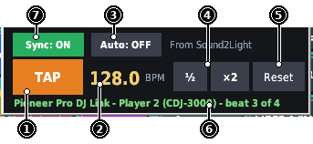
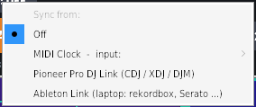
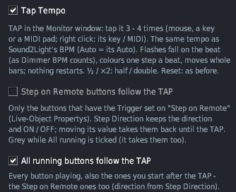
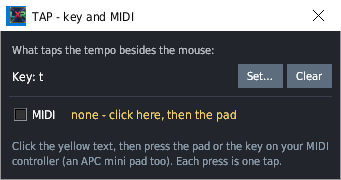

For: FullPlayer
Tap the beat of the music on TAP and the buttons you choose follow it. Each button keeps its own character, and lands on the beat in its own way: a dimmer game blinks on every beat, a colour change on every beat, a move over whole bars. Nothing ever restarts: every new speed goes on from where each button is. Its speed slider moves with it. The tempo is the same one as the BPM of Sound2Light. Tick Tap Tempo in the Move Controls of Monitor settings to show the TAP row in the Monitor.

The TAP rows of the Monitor, Sync on a Pioneer player at 128 BPM.
| 1 | TAP (orange): tap it 3 - 4 times on the beat, with the mouse. Each tap counts when it is pressed. A pause of more than 2 seconds starts a new count. Right-click: its key and MIDI (see below). |
| 2 | The tempo, in BPM - always the same number as the BPM of Sound2Light ("--" before the second tap). |
| 3 | Auto: ON / OFF (green while it is on), on Sync's row: the Auto of Sound2Light's BPM - "From Sound2Light" beside it is only a text. The tempo then comes from the music; the speeds change when it moves by 1 BPM or more. A TAP ends Auto. |
| 4 | ½ and ×2: half or double the tempo, without tapping again - everything that follows runs at half or double speed. On Auto they stay as a factor (Sound2Light detects 70 in a song of 140: ×2). |
| 5 | Reset: every speed and every slider back to how it was before the first TAP; the tempo here is cleared (Auto goes off; Sound2Light keeps its BPM). |
| 6 | The line under TAP: what follows the TAP now, and how ("Nothing follows the TAP now" when nothing does). While Sync is on it shows instead, in green, where Sync takes the tempo from, the player or the app, and the beat in the bar (beat 1 - 4 of 4); a long text goes on a second line. |
| 7 | Sync: ON (green) / OFF - the tempo and the beat from the DJ (see Sync below). Left click: on / off; right click: where from. |
With Sync on, nobody taps: the tempo and the beat come from the DJ's players, mixer or laptop, and the buttons that follow land on the DJ's beats (a dimmer game blinks on every beat of the music, a move lasts whole bars). When the DJ changes the song or moves the pitch, the speeds follow at once; nothing restarts.

| Where from | What it needs | What it gives |
|---|---|---|
| Pioneer Pro DJ Link (CDJ-3000, CDJ-2000NXS2, XDJ, DJM) | The PC on the same network as the players: a network cable to the switch / router of the players (or to the LINK port of the mixer). Nothing to set on the players. | The tempo of the player that plays (with its pitch), and its beat in the bar. When two players play, the one followed stays until it stops; then the other one. The program only listens: it does not appear as a player on the Pioneer network. |
| MIDI Clock - input: ... | A mixer or a laptop that sends MIDI Clock, on USB or a MIDI cable (for example the MIDI OUT of a DJM, or a DJ program with MIDI Clock out). Choose the input in the list. | The tempo (24 clocks a beat). The beat 1 comes with the Start of the clock; without a Start Sync gives only the tempo - then a TAP gives the beat and Sync goes on with the tempo. |
| Ableton Link (rekordbox, Serato, Traktor, VirtualDJ, Ableton ...) | The laptop with Link turned on in its program, on the same Wi-Fi / network as the PC (or on the same PC). | The tempo and the beat of the Link session (bars of 4). The program only listens: it never changes the tempo of the session. |
The TAP here and the BPM of Sound2Light are one tempo, shown with the same number in both places:
| Where | What happens |
|---|---|
| TAP (Monitor) | Sound2Light goes to Tap and shows the same BPM. |
| Tap in Sound2Light | The Monitor takes the BPM; the speeds follow at once. |
| Manual in Sound2Light (typed, or ▲ ▼) | The Monitor takes the value. |
| Auto (Monitor or Sound2Light) | The same switch in both places; the BPM detected from the music (with Start in Sound2Light). |

| Choice | What follows |
|---|---|
| Step on Remote buttons follow the TAP | Only the buttons that have the Trigger set on "Step on Remote" (Live-Object Propertys) and that Step Direction drives. The direction stays the one of Step Direction, and its ON / OFF works as before - the TAP does not change it. Grey while All running buttons follow the TAP is ticked. When you tick Tap Tempo and neither box is ticked, this one is ticked for you. Ticking this box (or the next one) while Tap Tempo is off ticks Tap Tempo too, so the TAP shows in the Monitor window. |
| All running buttons follow the TAP | Every button playing, and the ones you start after the TAP - the Step on Remote ones too, with the same rule (direction and ON / OFF from Step Direction). Ticking it unticks Step on Remote buttons follow the TAP and makes it grey: it is already included. |
| Moves: Keep move speed / One step a beat | How the moves (Pan / Tilt) follow: keeping about their own speed, the loop whole bars, or one step on each beat as the colours (see the table above). Kept with the project. Changing it applies at once. |
The speed sliders (setSeqSpeed) follow with their buttons: there is nothing to tick for them. When a button follows the TAP, its speed slider moves to the new speed; a slider of a button that does not play stays where it is.
The program looks at the steps of each button (once, when it first follows) and picks one of three ways:
| The button | On the beat | Shown under TAP |
|---|---|---|
| Dimmer games (Light 3ON-3OFF, Light Fill, WG ...): a dimmer goes up to 255 (from lower) on some steps - Pan / Tilt or not | Every blink on a beat, so Dimmer BPM shows the same tempo as the TAP. | dimmer game on the beat |
| Moves: Pan / Tilt changing, no blink | As chosen in Monitor settings, Moves: Keep move speed (the default) - the loop lasts the whole bars (4, 8, 12 ... beats) nearest its own length at the first TAP, so the move keeps about the speed it was made with; later taps change its speed, not its bars. One step a beat - as the colours: every step takes one beat, its fade made longer or shorter in the same proportion (the move goes on from where it is to the next point in one beat), so a move with few long steps gets much faster and one with many short steps slower. | 59 bars / step on the beat |
| Everything else: colours, gobos, the dimmer open on every step (shutter open) | Every step on a beat. | step on the beat |
On the beat, not only in its rhythm. At every tap (here, or Tap in Sound2Light) and at ½ / ×2, each dimmer game or button that steps on the beat is sped up or slowed down a little for what is left of its current step - a dimmer game up to its next blink - so that this change falls exactly on a beat; then it goes on at its own speed. It never restarts and never jumps (tested: the change came 5 ms after the beat). Moves and Step on Remote buttons are left as they are. Auto and Manual give no beat moment: they change only the speed.
The loop of a button is the sum of fade + wait of all its steps, at speed 1. A move shorter than a bar is rounded to 2, 1, ½ or ¼ beat. A button that starts to follow later is looked at when it starts. Reset forgets all this; the next TAP looks again.
Dimmer BPM counts a dimmer of the group reaching 255 from lower. A button that holds the same dimmers at 255 on every step (All Colors Change, for example) running at the same time hides the blinks from it: Dimmer BPM then shows "--".
The last touched wins. Move a slider that follows the TAP by hand, or move the value of Step Direction, and those chases take your speed again, until the next TAP. The instant reverse of Step Direction only turns the direction; the TAP speed stays. Unticking Tap Tempo works as Reset.

| Part | What it does |
|---|---|
| Set... | Press the key that taps (Esc cancels). Clear takes it away. The key works in the main window and in the Monitor; held down it taps once. |
| MIDI | Click the yellow text, then press the pad or the key of your MIDI controller (an APC mini pad too). Untick to switch it off. |
The Flash buttons (Live-Object Propertys: Flash) are left out: they light only while you hold them, and held down they run at their own speed - the TAP never starts them, lights them or changes their speed.
The two "follow" boxes are kept in the S2L.dat of the project; Tap Tempo, the key and the MIDI in the settings of the program.